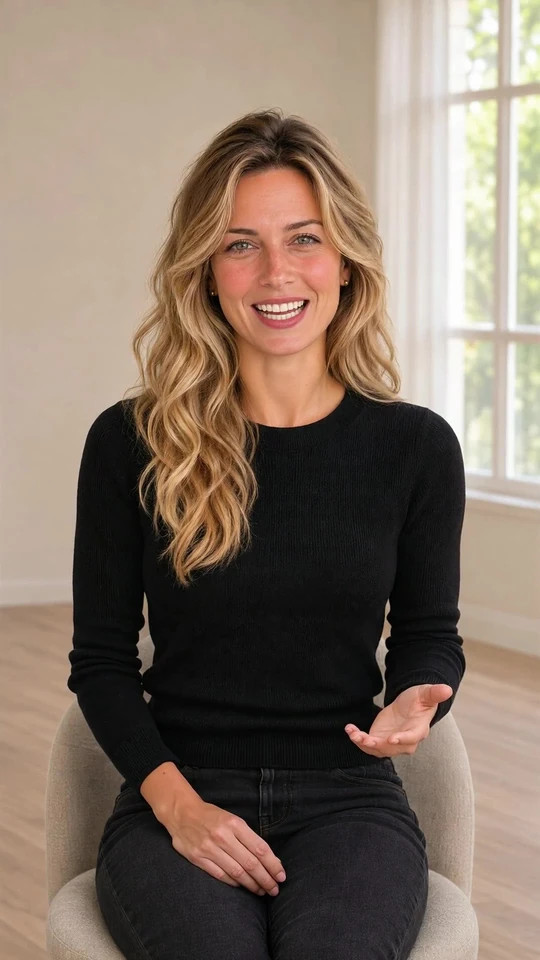
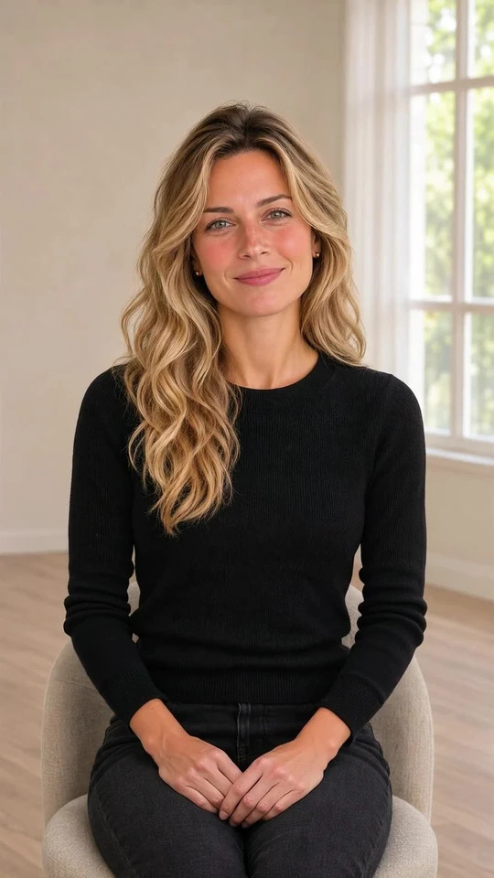
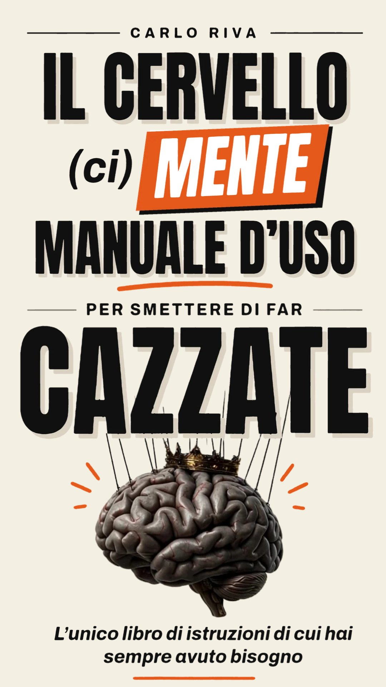

UNA STORIA DI NORA
IL PROGETTO
Un libro. E molto di più.
Un progetto di divulgazione che parte da un libro in tre volumi e si sviluppa attraverso storie, video e podcast, per comprendere meglio come funziona la nostra mente.
Nora è la voce virtuale di questo percorso. In futuro, il progetto potrà comprendere strumenti interattivi e percorsi formativi per scuole e aziende.
✳ IL MONDO VISTO DA NORA LA SERIE
IL CERVELLO
(ci) MENTE.
La mente racconta una storia.
Tu ci credi.
E poi scopri che mancava un pezzo.
Una serie di storie, equivoci e piccoli disastri quotidiani per scoprire quanto è sorprendente — e a volte dispettoso — il nostro cervello.
UNA SERIE DI NORA
DAL LIBRO DI CARLO RIVA.
DAL LIBRO DI CARLO RIVA.
LA VOCE
DELLE
STORIE
DELLE
STORIE
CIAO, SONO NORA.L’AVATAR IA DEL PROGETTO.
SCORRI E METTI IN DUBBIO QUALCOSA ↓STORIE DI FANTASIA · NORA È UN AVATAR IA
UNA DOMANDA CHE CI RIGUARDA TUTTI ✳ 01 / 03
CHI SCRIVE
LA STORIA
NELLA TESTA?
La mente non registra semplicemente il mondo. Lo interpreta, anticipa, ricostruisce. Nora ci porta dentro quei piccoli momenti in cui ce ne accorgiamo.
DALLE STORIE AL LIBRO02 / LA SERIEUN EPISODIO ALLA VOLTA.
UN DUBBIO ALLA VOLTA.
UN DUBBIO ALLA VOLTA.
PENSAVO
FOSSE COSÌ.
Spoiler: non sempre.
Storie brevi, personaggi riconoscibili e quel cervello che riempie i vuoti prima ancora di chiedere permesso.

DISPONIBILE ORA ● 1 MIN 38 SEC
ECCO PERCHÉ
SIAMO QUI.
Prima di entrare nella testa degli altri, conosciamo la voce che ci accompagnerà. Nora presenta il mondo de «Il cervello (ci) mente».
EPISODIO 00
IL PROSSIMO COLPO DI SCENA
IL CERVELLO NON HA FINITO.
CIAO!
03 / INCONTRA NORA
CIAO.
SONO NORA.
«Sono quella che ti fa una domanda quando eri già convinto di avere la risposta.»
Nora è la voce narrativa del progetto: ironica, curiosa, capace di trasformare i piccoli equivoci di ogni giorno in occasioni per capire qualcosa di più sulla mente.
Non è una persona reale né una professionista sanitaria: è un avatar creato con intelligenza artificiale. Le sue storie sono di fantasia; gli spunti scientifici sono raccontati in modo divulgativo.
ENTRA NELLE SUE STORIECON AFFETTO PER I NOSTRI ERRORI. E UN PIZZICO D'IRONIA.
04 / DA DOVE NASCE TUTTO
C'È ANCHE
UN LIBRO.
L'unico manuale d'istruzioni di cui hai sempre avuto bisogno.
«Il cervello (ci) mente» è il progetto editoriale di Carlo Riva: un viaggio fra percezioni, emozioni, aspettative e quei racconti interiori che a volte scambiamo per fatti.
Non una lezione dall'alto, ma un invito a essere un po' più curiosi dei nostri automatismi. Anche quando fanno fare figuracce.
PERCEZIONEEMOZIONISCELTESTORIE QUOTIDIANE
SEGUI IL PROGETTO 
ALLO SCHERMO
↗
05 / STORIE & CORTOCIRCUITIBREVI DA LEGGERE.
LUNGHE DA PENSARE.
LUNGHE DA PENSARE.
LA TUA TESTA
HA GIÀ DECISO?
Clicca una storia. Leggi la scena. E poi scopri quale piccolo trucco della mente potrebbe esserci dietro.
06 / UN GIOCO DA 10 SECONDI
TRE PAROLE.
UN FILM
IN TESTA.
Ti arriva un messaggio. Cosa pensi per prima cosa?
●●● 09:41 ⌁
Qual è la prima interpretazione che ti viene in mente?
Il punto non è indovinare.
Senza contesto, tutte queste letture sono possibili. La mente prova ad anticipare quello che succederà: utile, sì. Ma una previsione non è ancora un fatto.
07 / CI VEDIAMO DALL'ALTRA PARTENON FIDARTI
NON FIDARTI
DI TUTTO.
SEGUICI.
Nuove storie, episodi, dietro le quinte e aggiornamenti sul libro. Nessuna formula magica: solo curiosità, ironia e qualche domanda in più.